أي رقم تحطه تقدر تشيله بضغطة عليه، جرّبتها في الفحص: انحط الرقم وبعد الضغطة رجع للبطاقات.
وكل القوانين الـ٣٥ صارت شاشة أرقامها بنفس الطريقة، من مثال درسها.
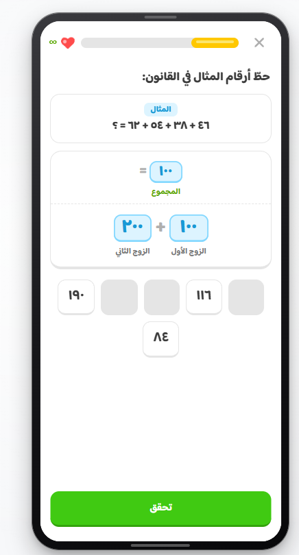
قبلالشاشة القديمة
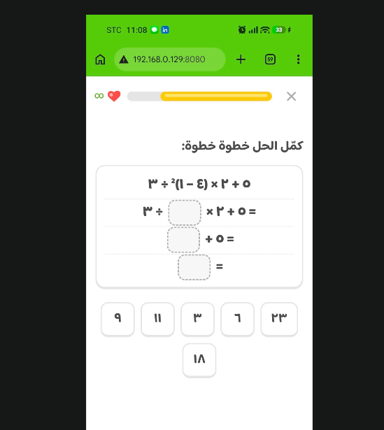
اللي طلبته«كمّل الحل خطوة خطوة»←
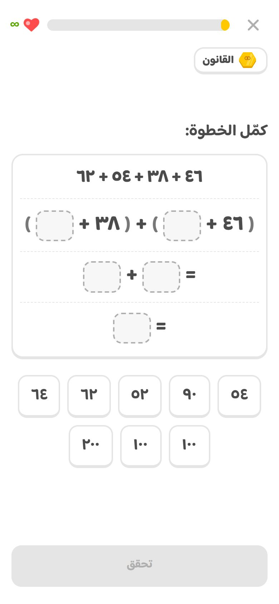
بعد«كمّل الخطوة» للقانون الأول
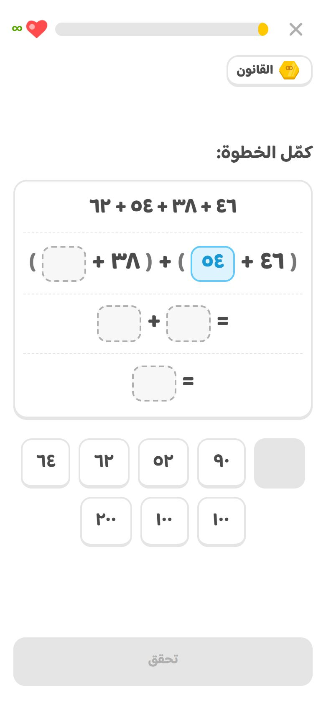
بعدرقم انحط، وتشيله بضغطة
٣بطاقة القانون في «تقدّمك اليوم» مثل بطاقة الدرس وأحلى
قلت: خلّ بطاقة القوانين مثل اللي فوقها أو أحسن، وأبي حركات كثيرة.
صارت بنفس شكل بطاقة الدرس: المسدّس الذهبي مكان الصح، اسم القانون والعدد «١/٣٥»، وتحتها خمس خطوات القانون مثل شريط الدرس، و«يرجع لك بكرة».
الحركة: المسدّس ينرمي من فوق ويلفّ مثل عملة المسار، ينزل وينضغط، البطاقة تنقلب ذهبية وتكبر شوي، لمعتين تدور جنب المسدّس، ضوء يعبر البطاقة، والخطوة الأولى تتعبّى، كل ضربة بصوتها.
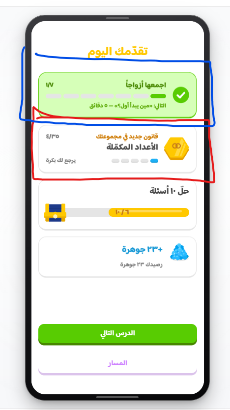
قبلالبطاقة القديمة←
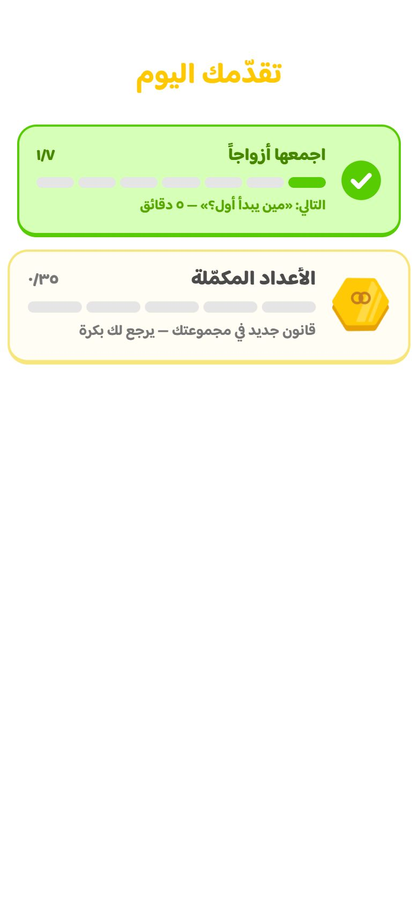
بعدالمسدّس ينرمي ويلفّ
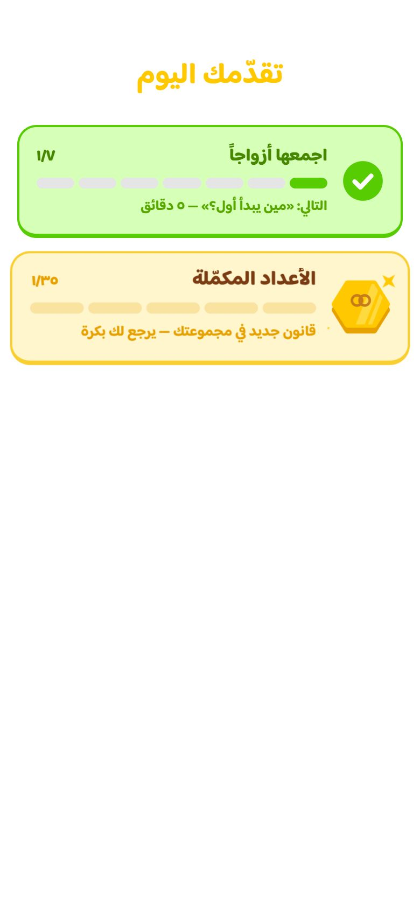
بعدينزل والبطاقة تنقلب ذهبية
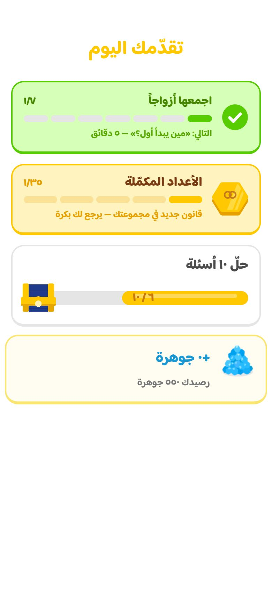
بعدالخطوة الأولى تعبّت
٤بطاقة «قوانين تراجعها اليوم» من ٣ قوانين وفوق، وبشكل جديد
قلت: أنا في أول درس ليش تطلع وأنا ما عندي قوانين؟ خلّها تطلع إذا عندي ٣ قوانين أو أكثر، وحسّن شكلها.
السبب: قوانين جوال التجربة كانت محفوظة في المتصفح. الحين القانون ما ينحسب إلا إذا خلّصت درسه فعلاً في حفظك، فطالب جديد ما يشوف قوانين ما تعلّمها، لا في المسار ولا في «قوانيني».
البطاقة ما تطلع إلا من ٣ قوانين وفوق.
شكلها الجديد: بطاقة بيضاء مثل بطاقات المسار، كومة العملات الذهبية جنب العنوان، اسم القانون اللي قدّام يتبدّل، وزر ذهبي عريض «راجع ٣ قوانين» يعبره ضوء كل ما تنرمي العملة.
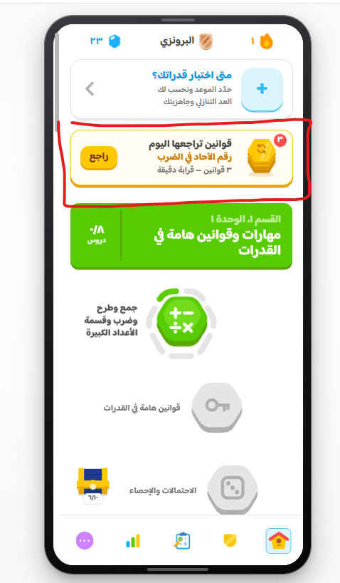
قبلطلعت في أول درس←
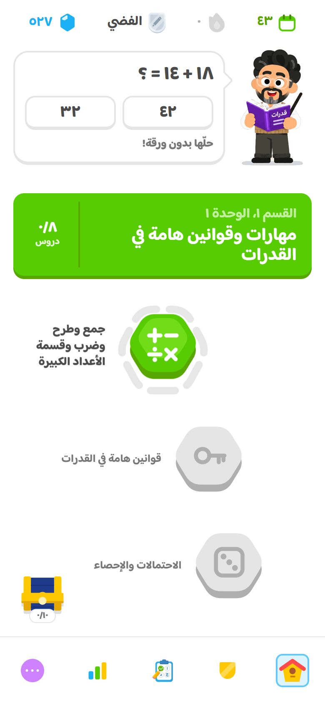
بعدطالب جديد: ما تطلع
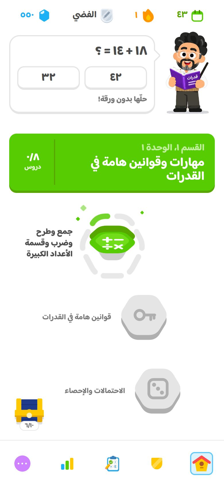
بعدبعد قانون واحد: ما تطلعبعد٣ قوانين: الشكل الجديد
٥زر «القانون» في كل شاشة بعد القانون
قلت: في كل شاشة بعد شاشة القانون حط زر يرجّعك له، شكله مثل دولينجو، فاللي يبي يشوف القانون مرة ثانية يقدر في أي صفحة.
زر أبيض بارز مثل أزرار دولينجو تحت شريط الدرس، فيه مسدّس القانون وكلمة «القانون» («القوانين» إذا الدرس فيه أكثر من واحد).
يطلع في كل شاشة بعد القانون في الدرس: «كمّل القانون»، «كمّل الخطوة»، وكل الأسئلة بعدها.
الضغطة تطلّع لوحة من تحت بنطّة، فيها القانون وكلماته تنوّر وحدة وحدة بصوتها، وشرحه، و«تمام» يرجعك لمكانك بدون ما يضيع شي من اللي عبّيته.